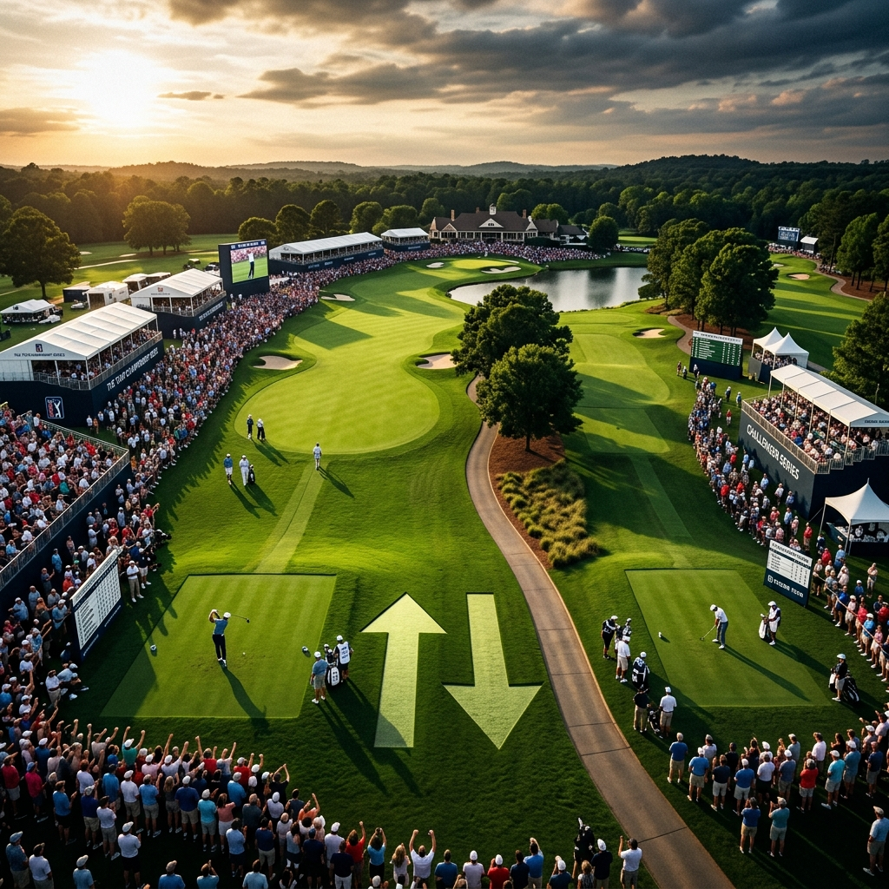

Quick answer: The PGA Tour announced a major overhaul that starts in the 2028 season. It will split into two tiers that run at the same time: the top-level PGA Tour Championship Series for the best players, and the PGA Tour Challenger Series as the feeder below it. Players move up and down between them through promotion and relegation, soccer-style. The season-ending Tour Championship will switch to match play and rotate around different courses instead of staying at East Lake. It is the biggest structural change to the Tour in decades.

Here is what is actually changing, in plain English, and why the Tour is doing it.
What Did the PGA Tour Announce?
A complete redesign of how the Tour works, approved by its boards and unveiled at the Travelers Championship. The headline is a "two-series model" that replaces the current setup starting in 2028. Instead of one big membership where everyone chases the same FedEx Cup, there will be two separate competitions running side by side, with a clear ladder between them.
The plan came out of a Future Competition Committee chaired by Tiger Woods, which spent about nine months studying the Tour's problems. The stated goal is meritocracy: get the best players competing against each other more often, make every tournament matter more, and give fans clearer stakes to follow.
What Are the Two Series?
There are two tiers, and they run concurrently through the season.
The PGA Tour Championship Series is the top level, where the stars play. It features roughly 23 to 24 events per season from about February to August, including the majors, the Players Championship, the Tour Championship, and the Ryder Cup or Presidents Cup. Fields are capped around 120 players, every event has a minimum $20 million purse, and there is a 36-hole cut.
The PGA Tour Challenger Series is the tier below, the primary pathway up to the top. It runs at the same time with bigger fields of around 144 players, a 36-hole cut, and purses of at least $4 million. It is essentially the proving ground where players fight to earn their way into the Championship Series.
The key rule: top-tier players cannot drop down to play Challenger events, and the two series keep completely separate points systems. They are two distinct competitions, not one big pool.
How Does Promotion and Relegation Work?
This is the heart of it, and it is borrowed straight from the soccer playbook. Players move between the two tiers based on how they perform.
- Staying up: At least the top 90 finishers in the Championship Series (out of roughly 130 eligible) keep their full status for the next season.
- Getting relegated: Players who fail to retain their spot drop down to the Challenger Series.
- Getting promoted: At least 20 players from the Challenger Series move up to the Championship Series each year.
- Fast-track promotion mid-season: A Challenger Series player can jump up immediately by winning two Challenger events in the same season, or by qualifying for and winning a major.
There is also a "last chance" series of four to six events to decide some of the final spots. The whole point is to make every week carry real consequence, instead of letting players coast with guaranteed status.
What Is Changing About the Tour Championship?
Two big things, and fans have been asking for both for years.
First, match play is coming back to the postseason. The Tour Championship will switch to a match-play format, ending the stroke-play model that has decided the FedEx Cup. Match play is more dramatic and unpredictable, the kind of head-to-head golf that produces real theater.
Second, it will move around. The Tour Championship has been parked at East Lake Golf Club in Atlanta for years. Now it will rotate among a set of prestigious venues, some of which have never hosted a Tour event before. The exact format and locations are still being finalized, with more details promised early next year.
What Happens to Sponsor Exemptions?
They are gone, at least at the top level. This is a quieter change, but a significant one. Championship Series events will have no sponsor exemptions and no alternate list. That ends the long-standing practice where a title sponsor could hand a spot in the field to a preferred player regardless of whether they earned it.
For a Tour that has long run on relationships and favors, that is a real cultural shift. At the top tier, you will get in on merit or not at all.
Why Is the PGA Tour Doing This?
Because the last few years exposed real problems. The fight with LIV Golf, the rise of guaranteed money, and fan complaints that the best players did not face each other often enough all pushed the Tour to rethink itself. The current signature-event model was a patch. This is a full redesign.
The Tour says fans told them three things: they wanted the best players together more often, clearer stakes as the season unfolds, and a more dramatic finish that actually rewards excellence. The two-series model with promotion, relegation, and a match-play finale is the answer to all three. Whether it delivers is another question, but the logic behind it is easy to follow.
When Does All of This Start?
The 2028 season. The boards have approved the framework, but a lot of the specifics are still being worked out. The Tour has lined up 10 of its expected 15 Championship Series regular-season events so far, with the rest possibly going to new big markets like Boston, New York, Philadelphia, Denver, San Francisco, Seattle, or Washington, D.C. The full 2028 schedule is expected to be announced in the first quarter of next year.
So this is a direction, not a finished product. The hard part, turning a bold vision into a system that actually works, is still ahead.
The Raw Read
On paper, this is the most sensible thing the PGA Tour has done in years. Promotion and relegation makes every week mean something. Match play in the finale is overdue and fun. Killing sponsor exemptions at the top puts merit over favors. Moving the Tour Championship around finally treats it like a real championship instead of an annual East Lake formality. If it works as designed, it is a genuinely better product.
But "if it works" is doing heavy lifting. A lot of the details that matter most, the schedule, the eligibility, how the DP World Tour and developmental tours fit in, are still unresolved, with deadlines that do not hit until 2027. Bold structural reforms in sports have a long history of looking great in a press release and messy in practice. The vision is strong. Now the Tour has to actually build it, and that is where these things usually live or die.
Frequently Asked Questions
What is the PGA Tour's new two-series model?
Starting in 2028, the Tour splits into two concurrent tiers: the top-level PGA Tour Championship Series and the feeder PGA Tour Challenger Series, with promotion and relegation between them.
When does the new PGA Tour structure start?
The 2028 season. The full schedule is expected to be announced in the first quarter of next year.
What is the PGA Tour Championship Series?
The top tier, with about 23 to 24 events including the majors and Players, 120-player fields, $20 million minimum purses, and the season's best players.
How does promotion and relegation work?
The top 90 in the Championship Series keep their status; at least 20 Challenger Series players are promoted each year. A player can jump up mid-season by winning two Challenger events or by winning a major.
Is the Tour Championship changing?
Yes. It moves to a match-play format and will rotate among different prestigious venues instead of staying at East Lake in Atlanta.
Who led the changes?
A Future Competition Committee chaired by Tiger Woods, working with PGA Tour CEO Brian Rolapp and a group of player and business representatives.